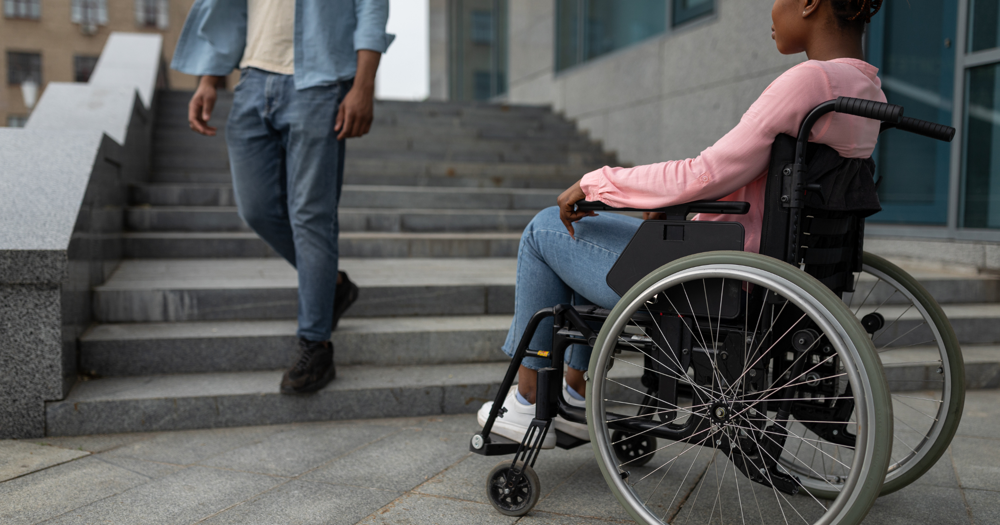
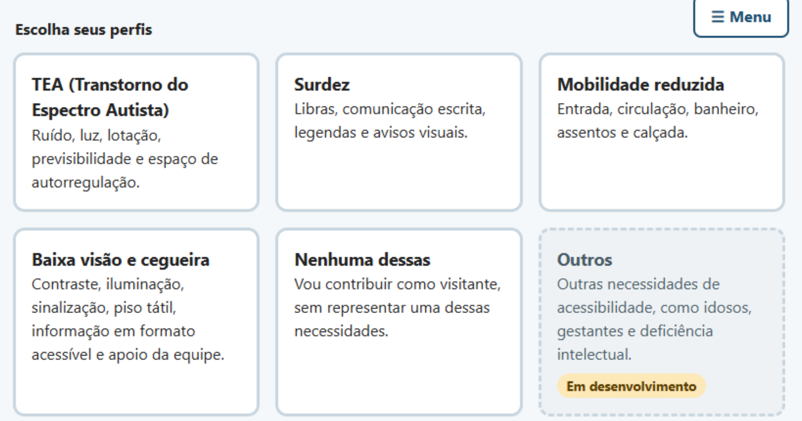
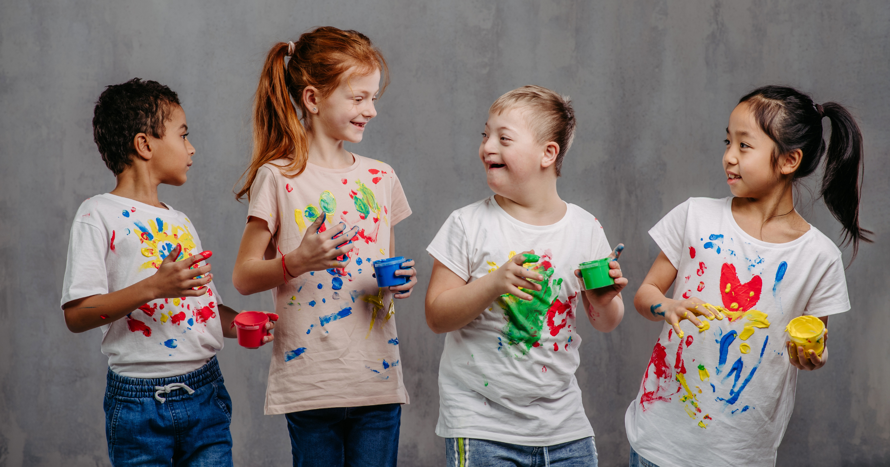

Para saber mais
Um local só é acessível quando as pessoas conseguem usá-lo de verdade. Entenda as ideias por trás do Acessa+.
Por que o Acessa+ existe
Sair de casa não deveria significar descobrir, só ao chegar, que um lugar não atende às suas necessidades. O Acessa+ nasceu para reunir experiências de quem visita os estabelecimentos e ajudar outras pessoas a planejar seus destinos com mais informação e autonomia. Porque acessibilidade vai além de uma rampa: envolve o ambiente, a comunicação e o atendimento.

Verifique seu destino, compartilhe sua experiência.
Cada pessoa vivencia os espaços de uma forma. Por isso, o Acessa+ permite selecionar um ou mais perfis: TEA, surdez, mobilidade reduzida e baixa visão e cegueira. As perguntas de avaliação consideram as necessidades de cada perfil, para que você encontre informações relevantes para a sua visita.
Todas as pessoas podem contribuir, mesmo sem selecionar um perfil. No cálculo do índice, as avaliações têm peso 2 quando correspondem a um dos perfis declarados por quem avalia e peso 1 nos demais casos. Assim, o projeto dá maior participação às experiências de quem vivencia aquela necessidade.

Uma comunidade que constrói junto
A experiência de uma pessoa pode ajudar muitas outras. Ao avaliar um estabelecimento, você compartilha informações sobre as condições que encontrou e contribui para que outras pessoas escolham seus destinos com mais consciência.
As respostas da comunidade formam um índice experimental de acessibilidade para cada perfil. Esse percentual resume os critérios avaliados, mas não é uma certificação nem garante que o local atenda a todas as necessidades. Quando há menos de três avaliações em uma área, o site recomenda interpretar o resultado com cautela.
Para facilitar a consulta, o assistente de inteligência artificial responde a perguntas usando apenas as avaliações do Acessa+ sobre o local selecionado e indica as referências utilizadas. Quando as avaliações não trazem a informação necessária, o assistente deve deixar essa limitação clara, sem inventar respostas.

🚧 O que são barreiras?
Barreira é tudo o que impede ou dificulta a participação de uma pessoa: um degrau, uma informação que ela não consegue perceber ou até uma atitude preconceituosa. A lei brasileira (Lei 13.146/2015) reconhece seis tipos:
- Urbanísticas: ruas, calçadas e espaços públicos.
- Arquitetônicas: dentro de edifícios, como escadas e banheiros.
- Nos transportes: ônibus, metrô e pontos.
- Na comunicação: falta de legenda, Libras ou linguagem clara.
- Atitudinais: o preconceito e o despreparo no atendimento.
- Tecnológicas: sites e aplicativos que nem todos conseguem usar.
O Acessa+ ajuda você a descobrir essas barreiras antes de sair de casa.
⏳ De onde vem essa ideia?
Por muito tempo, a deficiência foi vista como um problema da pessoa. Isso mudou aos poucos:
- Antiguidade até a Idade Moderna: exclusão e segregação.
- Anos 1950 e 1960: as pessoas saem das instituições e os movimentos por direitos civis crescem.
- 1976: nasce o modelo social: a deficiência surge quando a sociedade não considera as diferenças.
- 1980: o arquiteto Ronald Mace cria o termo Desenho Universal.
- Hoje: o modelo biopsicossocial une o corpo, a mente e o ambiente.
Por isso, o lema é "Nada sobre nós, sem nós".
✅ Os 7 princípios do Desenho Universal
São sete ideias para criar lugares, produtos e serviços que sirvam ao maior número possível de pessoas:
- Uso igualitário: todos usam do mesmo jeito, sem desvio.
- Uso flexível: mais de uma forma de usar.
- Simples e intuitivo: fácil de entender, sem manual.
- Informação perceptível: chega por mais de um sentido, com bom contraste.
- Tolerância ao erro: um engano tem pouca consequência e pode ser desfeito.
- Baixo esforço físico: pouca força, sem posturas forçadas.
- Dimensão e espaço adequados: cabe cadeira de rodas, carrinho e acompanhante.
Usamos esses princípios como roteiro para montar as perguntas do Acessa+.
🧠 Cada pessoa aprende de um jeito
O Desenho Universal para a Aprendizagem (DUA), criado pelo CAST, parte de uma ideia: não existe um único jeito de aprender. Ele propõe três caminhos:
- Representação: apresentar a informação em vários formatos.
- Ação e expressão: permitir várias formas de mostrar o que se sabe.
- Engajamento: dar motivos para participar e continuar.
No Acessa+, isso aparece em ícones, textos e cores juntos, em avaliações por escrita, escala ou áudio, e em uma comunidade que mostra o impacto de cada contribuição.
📚 Fontes
- Lei Brasileira de Inclusão (Lei nº 13.146/2015).
- ABNT NBR 9050:2020: acessibilidade a edificações, mobiliário, espaços e equipamentos urbanos.
- CAST (2024). UDL Guidelines, versão 3.0.
- Connell et al. (1997): princípios do Desenho Universal.
- Material da disciplina Desenho Universal e Tecnologia Assistiva, UFABC (2026).